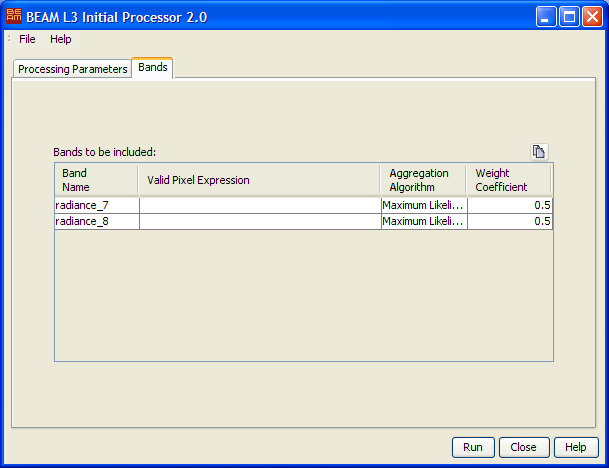

| Processor Description - L3 Binning Initial Processor |
|
The L3 Initial Processor creates an empty bin database at the desired location. It also defines all parameters used in the database update process:
 to invoke a standard file dialog.
to invoke a standard file dialog.
It is possible to process multiple bands from the input product at once.
Choose the geophysical bands to be binned in the band chooser . This is only possible if an input product has already been selected. Afterwards for each band the following parameters can be specified:
button to the
right.The following table describes the L3 Initial Processor specific processing request file parameter. For a detailed description of the processing request file concept and file specification please look at the general description section.
| Parameter name | Description | Type | Valueset |
|---|---|---|---|
| type | Request type. Mandatory attribute of the Request element |
String | "BINNING" |
| process_type | The request process type identifier. | String | "init" |
| database | Absolute path to bin database to be created. | Path | - |
| resampling_type | The resampling method to be used. | String | "binnig" or "flux-conserving" |
| grid_cell_size | The grid cell size to be used during processing in kilometers (binning mode). | Float | >= 0.001 |
| cells_per_degree | The number of bin cells per degree (flux-conserving mode). | Integer | > 0 |
| band_name.0, band_name.1, ... | Name of the geophysical parameter to be processed. | String | - |
| bitmask.0, bitmask.1, ... | Bitmask expression to be evaluated during processing. | Bitmask | - |
| binning_algorithm.0, binning_algorithm.1, ... | The binning algorithm to be used. | String | "Maximum Likelihood" "Arithmetic Mean" or "Minimum/Maximum" |
| weight_coefficient.0, weight_coefficient.1, ... | The weight coefficient to be used during accumulation. | Float | - |
| lat_min | Minimum latitude value of the target product. | Float | -90.0 - 90.0 |
| lat_max | Maximum latitude value of the target product. | Float | -90.0 - 90.0 |
| lon_min | Minimum longitude value of the target product. | Float | -180.0 - 180.0 |
| lon_max | Maximum longitude value of the target product. | Float | -180.0 - 180.0 |